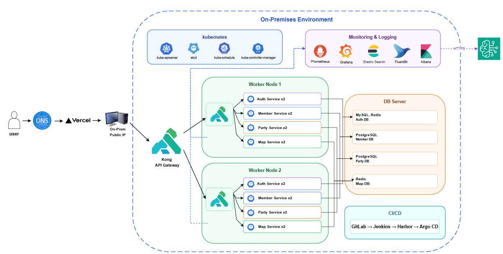
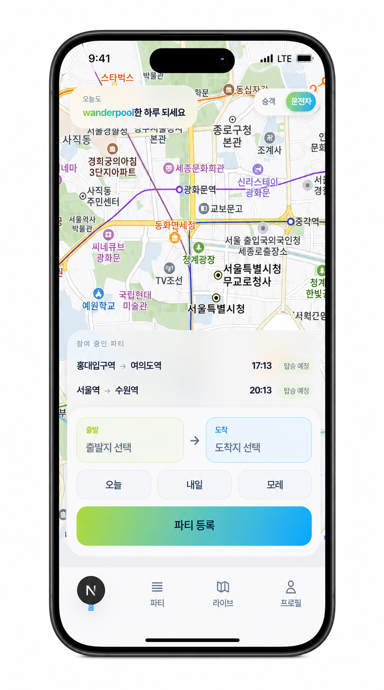
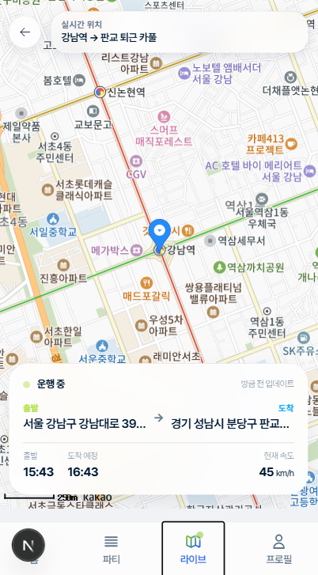
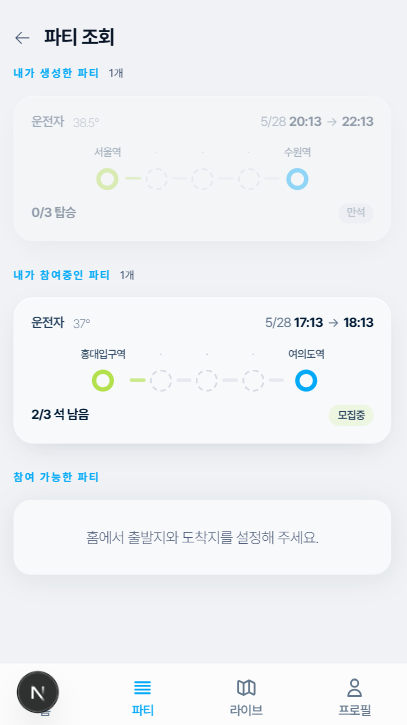
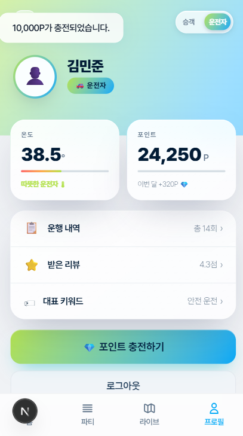
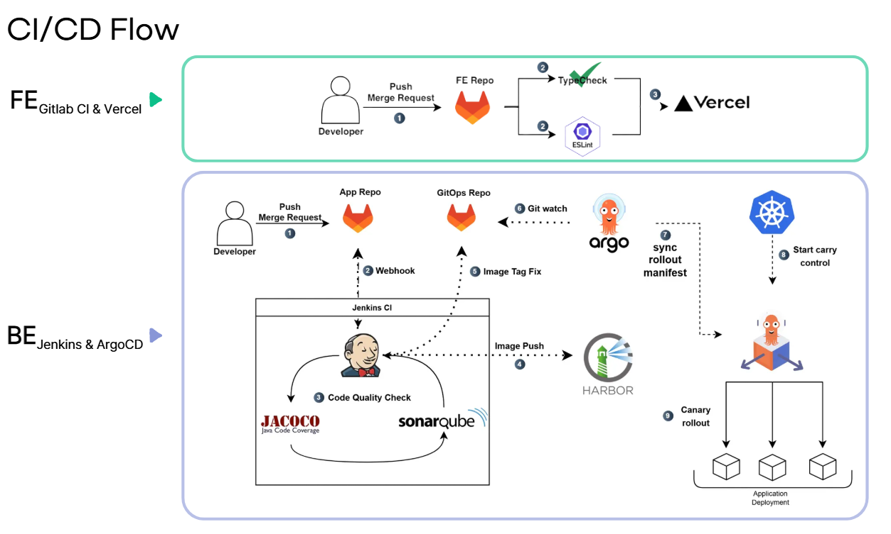
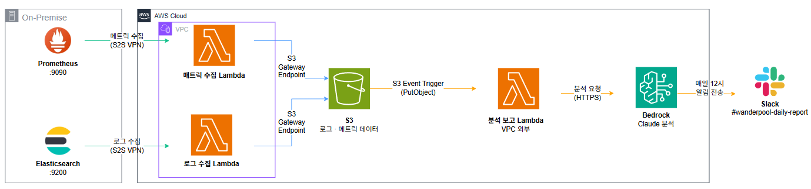
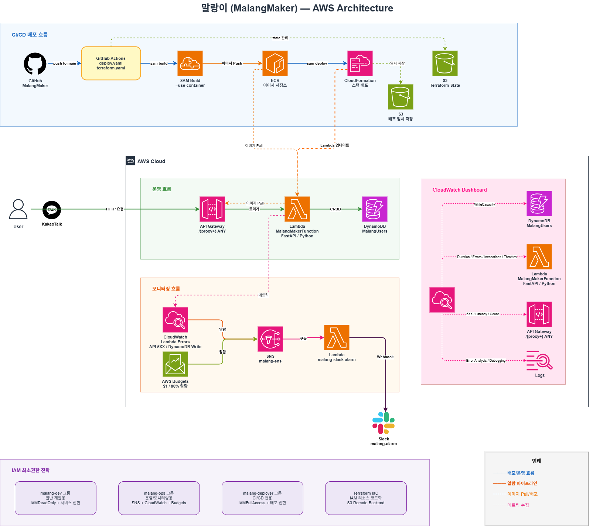
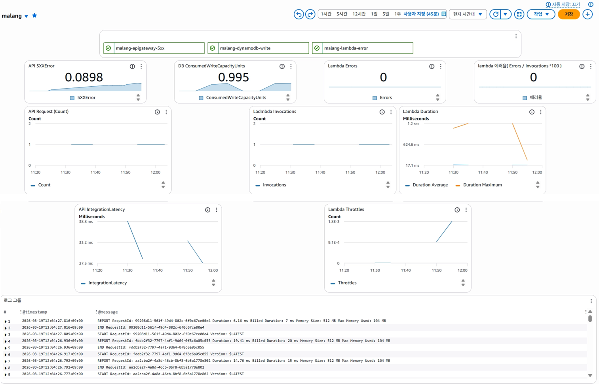
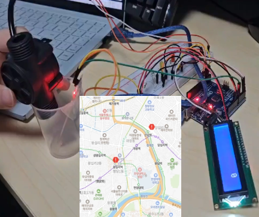

최수정
온프레미스와 AWS를 오가며 네트워크·인프라를 설계하고, CI/CD와 모니터링 파이프라인을 구축합니다.
Kubernetes 기반 MSA 인프라설계부터 AWS 마이그레이션까지 직접 다루며 실 운영 서비스를 만들어왔습니다.
보안을 고려한 설계와 자동화 기반 운영 효율화를 지향하며, 로그·메트릭을 AI로 분석해
리포트로 전달하는 모니터링 파이프라인도 구축했습니다.
목차
서비스 화면 · 아키텍처 · 기술 스택 · 네트워크 설계 · CI/CD · BFF · 기술 의사결정 · 보안 · AI Observability
AWS 마이그레이션 · DR · 트러블슈팅
기술 스택 · 아키텍처 · 메모리 최적화 · 트러블슈팅 · 프로젝트 요약
서비스 화면 · AWS 아키텍처 · 인프라 설계 · CI/CD · 운영 · 부하 테스트 · 트러블슈팅
버전 비교 · 실시간 통신 개선 · 트러블슈팅
WanderPool

현대오토에버 클라우드 스쿨 3기 4인 팀 프로젝트. 온프레미스 Kubernetes 클러스터(물리 서버 2대, VM 9대) 위에 4개 마이크로서비스를 구성하고, AWS EKS로 마이그레이션했습니다. 네트워크·인프라 설계, CI/CD 구축, 모니터링·로깅 AI 파이프라인, AWS 마이그레이션을 맡았습니다.
- Kong Gateway 단일 진입점 도입으로 서비스별 인증 로직 중복 제거
- CIDR·S2S VPN 설계로 온프레미스 AWS 네트워크 연동
- Lambda 기반 AI Observability 파이프라인으로 Slack 일일 리포트 자동화
- 온프레미스 → AWS EKS 마이그레이션 주도
서비스 화면




전체 시스템 아키텍처
Kong API Gateway 단일 진입점 · Worker Node 2대 (auth/member/party/map ×2) · DB 서버 분리 · GitLab → Jenkins → Harbor → ArgoCD · Prometheus/Grafana/ELK 모니터링
기술 스택
네트워크 설계 이유
- ① Mixed Content 방지— Vercel HTTPS 프론트엔드에 API도 동일하게 HTTPS로 제공
- ② DNS-01 선택— 포트 80 없이 도메인 소유권 검증 가능. 공유기가 80포트를 열 수 없는 제약을 우회
- ③ TLS 자동화— cert-manager로 인증서 발급·갱신 자동화
네트워크 설계 이유
클라이언트가 각 서비스로 직접 요청. 서비스마다 인증/인가 로직이 중복되고, 클라이언트가 보낸 헤더를 그대로 신뢰해야 하는 위험이 있었으며 진입점이 분산되어 있었습니다.
Kong Gateway를 단일 진입점으로 사용. Route를 Public(auth)/Protected(member·party·map)로 분리하고, Protected 요청은 JWT를 검증한 뒤 클라이언트 식별 헤더를 제거하고 검증된 Claim 기반 헤더로 교체합니다.
CI/CD Pipeline

FE: GitLab CI(TypeCheck·ESLint) → Vercel · BE: Jenkins(JaCoCo·SonarQube) → Harbor → GitOps Repo → ArgoCD → Argo Rollouts Canary 배포
의사결정 기록
의사결정 기록
merge_request_event)에
직접 연결해 kustomize build로 렌더링한 최종 매니페스트를 검증하도록 구성. kubeconform(-strict)은
스키마·타입 오류를 잡아 실패 시 병합을 차단하고, kube-score는 베스트프랙티스를 점수로 리포트만 하는
비차단 권고로 분리- 관심사 분리— 수집(적재)과 분석·전달(LLM 호출·알림)은 책임이 다른 작업
- 최소 노출— 수집은 사설망에만, 보고서는 외부 API(Bedrock·Slack)에만 접근. 한 함수에 사설망과 인터넷을 동시에 열지 않음
- 운영·비용 효율— 사설망 접근은 VPC 내부(S3 Gateway Endpoint), 외부 호출은 VPC 외부. 두 영역을 잇는 상시 NAT Gateway 불필요
소스코드와 이미지를 외부에 두지 않기
| 도구 | 역할 | 설명 |
|---|---|---|
| GitLab | Self-hosted Git | 소스코드·GitOps 매니페스트를 내부에서 관리, 팀 단위 접근 권한 통제 |
| Jenkins | Internal CI | 빌드·테스트·이미지 생성 자동화, Harbor Push까지 내부 파이프라인에서 수행 (팀원 담당) |
| Harbor | Private Registry | 컨테이너 이미지를 내부에 저장, 외부 Registry 노출 최소화 (초기 설정은 팀원 담당) |
GitLab·Jenkins·Harbor 등 사내 도구 설치 자체는 팀 공동 작업으로 진행. 이후 GitOps 검증 파이프라인(CI/CD 섹션 참고)은 본인이 구축.
AI Observability Pipeline

AI Observability Pipeline
- 메트릭(Prometheus)— Pod 상태, 재시작 횟수, 요청량(req/s), CPU/Memory
- 로그(Elasticsearch)—
error필터링 로그를 네임스페이스별·Pod별로 집계
단순 요약이 아니라 이상 감지 → 원인 추론 → 확인 명령어 제시순서로 응답하도록 지시하고, 심각도를 위험/ 주의
/ 정상으로 분류하도록 프롬프트에 명시했습니다.
사람이 직접 대시보드를 보지 않아도 Slack으로 인프라 이상 여부를 확인할 수 있습니다. 단순 알림(AlertManager)과 달리 맥락 기반 해석이 포함되어 있어, 재시작 횟수나 에러 로그 급증이 발견되면 원인 후보와 확인 명령어까지 함께 전달됩니다.
온프레미스 → AWS 마이그레이션
| 영역 | 온프레미스 | AWS |
|---|---|---|
| 클러스터 | kubeadm 자체 구축 | EKS |
| 데이터베이스 | VM에 MySQL/PostgreSQL/Redis 직접 설치 | RDS(MySQL/PostgreSQL) + ElastiCache(Redis) |
| 이미지 레지스트리 | Harbor | ECR (imagePullSecret 제거) |
| TLS | cert-manager + Cloudflare DNS-01 | ALB + ACM |
| 권한 | ServiceAccount | IRSA (워크로드별 최소 권한) |
| 네트워크 | VM NAT + NodePort | VPC 3-tier |
재해복구(DR) 계획 · 런북
이미 구축된 시스템을 네트워크 · Kubernetes · DB · 외부 연동레이어별로 분리해, 각 계층에서 발생할 수 있는 장애 시나리오와 복구 절차를 설계·문서화했습니다. 직접 구현한 인프라를 새로 만든 것은 아니고, 이미 만들어진 시스템을 운영 관점에서 다시 들여다보며 대응 체계를 정리한 작업입니다.
| 등급 | 장애 범위 | 예시 |
|---|---|---|
| L1 | Pod 단위 | 특정 마이크로서비스(party, member 등) Pod CrashLoopBackOff |
| L2 | Worker Node 단위 | worker1 또는 worker2 다운 |
| L3 | Host PC 단위 | K8s용 또는 DB용 Host PC 1대 전체 다운 (Host PC 2대를 K8s용·DB용으로 분리 운영 중) |
| L4 | 학원 네트워크·전원 전체 장애 | 정전, 네트워크 완전 단절 등 외부 도달 불가 상황 |
L1은 K8s의 Probe 기반 자동 재시작과 ArgoCD GitOps 재배포에 더해, AlertManager 실시간 알림과 Lambda 기반 일일 Bedrock 요약(AI Observability Pipeline 참고)까지 이중으로 탐지되고 있습니다. L2는 Kong이 replica 2 + podAntiAffinity로 노드 분산 배치되어 있고 각 서비스도 HPA minReplicas 2가 기본값이라 단일 노드 장애에 대한 기본 대응력은 갖췄지만, 실제 노드 장애 재현 테스트까지는 하지 못했습니다. L3(Host PC 전체 장애)는 문서화 과정에서 GitOps 저장소와 컨테이너 레지스트리가 K8s 클러스터와 같은 호스트 위에 있어 단일 장애점이 된다는 구조적 취약점을 발견했고, 이 부분이 가장 큰 보강 대상으로 남아 있습니다.
트러블슈팅
MetalLB L2 모드로 서비스에 External IP를 할당했지만 외부에서 접근이 되지 않음.
원인VirtualBox NAT Network 구조에서 L2 모드의 ARP 브로드캐스트가 호스트에 도달하지 못함.
해결NodePort + Kong 구조로 전환. Kong이 서비스별 라우팅을 담당하도록 구성.
학습표준 방식(MetalLB)이 항상 정답은 아니며, 네트워크 계층의 제약을 먼저 검증해야 한다는 것을 확인.
마이그레이션 중 Pod 개수가 계속 늘어나며 노드에서 OOM 발생.
원인ArgoCD sync 문제를 먼저 의심했으나, 실제 원인은 HPA의 replica 자가복원. Deployment의 replica 수를 줄여도 HPA가 계속 원래 값으로 되돌림.
해결HPA 설정(min/max replica, 목표 지표)을 먼저 확인·조정한 뒤 재배포.
학습선언적 시스템에서는 증상만으로 판단하지 말고 어떤 컨트롤러(Deployment vs HPA vs ArgoCD)가 실제로 상태를 관리하는지 먼저 확인해야 한다.
배포 후 OAuth 로그인 인증 실패.
원인kustomize overlay 패치가 base ConfigMap 전체를 덮어쓰면서 사용 중이지 않던 OAuth provider 키까지 함께 활성화되어 충돌.
해결실제 사용 중인 provider 값만 활성화하는 최소 변경으로 패치를 수정.
학습overlay 패치는 필요한 필드만 최소한으로 건드려야 한다. ConfigMap 전체 치환은 예상치 못한 사이드 이펙트를 만든다.
트러블슈팅
기존 Harbor 이미지를 ECR로 옮기려는데 CloudShell로 접근이 안 됨.
원인기존 S2S VPN이 구 VPC 기준으로 연결되어 있어 새 VPC의 CloudShell까지 도달할 경로가 없음.
해결Harbor가 설치된 VM을 경유지로 삼아 임시 자격증명을 발급받아 이미지를 직접 push.
학습네트워크 경로가 바뀌는 마이그레이션에서는 기존 연결을 그대로 재사용할 수 있다고 가정하면 안 되고, 항상 실제 경로를 먼저 확인해야 한다.
마이그레이션 후 서비스가 DB 인증에서 계속 실패.
원인앱 전용 DB 사용자 미생성, 비밀번호 불일치, DB명(wp_auth) 불일치가 동시에 얽혀있었음.
사용자·DB 생성, 권한 부여, 비밀번호 통일까지 단계적으로 원인을 하나씩 제거.
학습연쇄된 문제는 한 번에 고치려 하지 말고 단계별로 하나씩 검증해야 실제 원인을 놓치지 않는다.
검증 단계에서 Kong을 거친 요청이 서비스에서 502/503으로 실패.
원인Istio mTLS STRICT 환경에서 서비스 메시 밖에 있는 Kong의 요청이 인증되지 않아 차단됨을 규명.
해결검증 단계에서는 PERMISSIVE 모드로 전환. 운영 목표는 Kong을 서비스 메시 sidecar로 편입시키는 것.
학습mTLS 같은 보안 정책은 메시 경계 밖 컴포넌트를 예외 없이 차단할 수 있다는 것을 확인. 경계에 걸친 컴포넌트는 설계 단계에서부터 별도로 고려해야 한다.
배운 점 & 개선사항
온프레미스와 AWS를 연결하고 MSA를 마이그레이션하는 과정에서 개별 기술보다 네트워크 경로, 인증 경계, 배포 순서처럼 시스템 사이의 연결 조건이 안정성을 좌우한다는 점을 배웠습니다. 특히 장애를 애플리케이션 문제로 단정하지 않고 DNS, Gateway, Service Mesh, 데이터베이스까지 계층별로 확인하면서 관측 가능한 구조와 단계적인 검증 절차의 중요성을 체감했습니다.
다음 단계에서는 환경별 GitOps 구성을 더 명확히 분리하고 배포 전 스키마·정책 검증을 자동화해 설정 변경으로 인한 장애를 줄이고 싶습니다. 또한 RTO·RPO 기준에 맞춘 복구 훈련을 정기적으로 수행하고, AI Observability 리포트에 서비스별 SLO와 추세 데이터를 연결해 장애 발생 이후의 분석뿐 아니라 이상 징후를 선제적으로 판단할 수 있도록 개선할 계획입니다.
Wattup

전기차 충전소 실시간 예약 및 현황 관리 서비스. VirtualBox 기반 On-premise Kubernetes 클러스터를 설계·구축하고 프론트엔드 개발을 담당했습니다.
- kubeadm으로 멀티 노드(master+worker 3개) 클러스터 직접 구축, EKS 대신 온프레미스 선택
- Calico + Tailscale VPN 충돌 해결 (felixconfiguration 패치)
- JVM 힙 설정으로 Kafka 메모리 사용량 95% → 76% 최적화
- Vite 빌드타임 환경변수 구조 문제 해결
Tech Stack & 왜 온프레미스인가
EKS 같은 관리형 서비스는 내부 동작을 추상화합니다. 스케줄링, 네트워킹, 스토리지를 직접 다뤄야 나중에 EKS도 제대로 쓸 수 있다고 판단했습니다. 또한 회사 환경에서는 비용 문제로 직접 구축하는 경우가 많습니다.
minikube는 단일 노드 실습용입니다. kubeadm으로 멀티 노드(master + worker 3개) 클러스터를 직접 구성하여 노드 간 네트워킹, pod 스케줄링, CNI 동작을 실제 환경에 가깝게 경험했습니다.
네트워크 아키텍처
메모리 최적화 (95% → 76%)
limits.memory는
OOM killer 상한이고 JVM의 -Xmx는 힙 크기로 별개 동작. JVM 컨테이너는 반드시 HEAP_OPTS와
limits.memory를 함께 설정해야 함.
트러블슈팅
PostgreSQL Pod가 볼륨에 접근하지 못하고 CrashLoopBackOff 상태를 반복했습니다.
local-path-provisioner가 PVC 디렉토리를 root 소유로 생성. runAsUser: 999를 함께 설정하면
오히려
권한이 없어짐.
사용자와 그룹을 강제로 지정하던 설정을 제거하고, 볼륨 파일에 PostgreSQL 그룹 권한이 적용되도록 fsGroup만 지정해 정상적으로 데이터 디렉토리에 접근하도록 수정했습니다.
컨테이너 실행 사용자뿐 아니라 볼륨을 생성하는 프로비저너의 소유권 방식까지 함께 확인해야 합니다. 이후 StatefulSet 배포 가이드에 fsGroup 적용 원칙을 명시했습니다.
Kafka 첫 번째 Pod만 실행된 채 나머지 Pod가 준비되지 않아 클러스터 구성이 멈췄습니다.
원인3-node KRaft는 과반수 노드가 동시에 떠야 리더 선출 가능. StatefulSet 기본 순차 실행으로 kafka-0 혼자 먼저 떠서 쿼럼 불가 → 데드락.
해결Kafka Pod가 순차적으로 기다리지 않고 동시에 시작되도록 StatefulSet의 Pod 관리 정책을 병렬 방식으로 변경하고, 준비 상태 이전에도 노드끼리 주소를 찾을 수 있도록 Headless Service의 탐색 설정을 조정했습니다.
학습분산 시스템의 배포 순서는 일반 애플리케이션과 달리 쿼럼 형성 조건을 먼저 고려해야 합니다. 이후 Kafka 배포 템플릿에 병렬 시작과 노드 탐색 설정을 기본값으로 반영했습니다.
Tailscale 설치 후 Calico가 tailscale0을 노드 IP로 착각 → CoreDNS / kube-proxy /
local-path-provisioner 연쇄 CrashLoop.
Calico IP 자동 감지가 Tailscale VPN 인터페이스를 우선 선택. Pod 네트워크 라우팅 전체 붕괴.
해결Calico가 실제 내부망 인터페이스만 노드 IP로 감지하도록 대상을 고정하고, Tailscale이 외부 라우트를 받아 CNI 경로를 변경하지 않도록 설정해 Pod 네트워크를 복구했습니다.
학습한 노드에 CNI와 VPN 인터페이스가 함께 존재하면 자동 감지에 의존해서는 안 됩니다. 이후 VPN 설치 전에 Calico 인터페이스를 고정하고 설치 후 전체 노드의 CNI 상태를 확인하는 절차를 문서화했습니다.
배운 점 & 개선사항
StatefulSet을 직접 다뤄보고 싶어서 PostgreSQL, Kafka, Debezium을 모두 Kubernetes 클러스터 내에 구성했습니다. 그러나 서비스 간 의존성이 깊어질수록 단일 장애 지점(SPOF)이 생기기 쉽고, 특히 Kafka 쿼럼 실패나 PostgreSQL securityContext 오류처럼 하나의 컴포넌트 문제가 전체 서비스에 영향을 미치는 상황을 경험했습니다.
가용성과 보안성을 높이기 위해 StatefulSet 사용을 지양하고, DB + Kafka + Debezium을 별도 VM에 구성한 뒤 Tailscale VPN으로 K8s 클러스터와 묶어 관리하는 방식으로 개선하고 싶습니다. 이렇게 하면 인프라 레이어와 애플리케이션 레이어가 분리되어 장애 격리와 독립적인 스케일링이 가능해집니다.
말랑이 메이커

카카오톡을 통해 자신만의 캐릭터 '말랑이'를 육성하는 게임형 챗봇 서비스입니다. 비정형 트래픽에 최적화된 서버리스 아키텍처로 설계해 2026.06까지 실제 운영했습니다.
- Lambda + DynamoDB 서버리스 구조로 월 운영비 $0.03 달성
- k6 부하 테스트로 실제 운영 버그(KeyError) 발견 및 수정
- EventBridge 웜업으로 콜드스타트 6s → 284ms 개선
- Terraform IaC + IAM 최소권한 3그룹 분리로 배포 자동화
서비스 화면
시스템 아키텍처
CI/CD 배포 흐름 · 운영 흐름 · 모니터링 흐름 · IAM 최소권한 전략
테크 스택
설계 이유
설계 이유
terraform import로 가져와 코드화.
terraform plan으로 변경 사항 사전 검증 후 GitHub Actions에서 apply실행
terraform plan자동 검증으로 적용 전 확인자동화 배포 파이프라인
부하 테스트 · 목적과 시나리오
서버리스 아키텍처의 특성상 트래픽 급증 및 콜드 스타트 상황에서의 안정성을 검증하기 위해 k6 기반 부하 테스트를 수행했습니다.
| 측정 항목 | 측정 방법 | 기대값 |
|---|---|---|
| 평균 응답시간 | k6 http_req_duration avg | 200ms 이내 |
| p95 응답시간 | k6 p(95) | 3,000ms 이내 |
| 에러율 | k6 http_req_failed | 5% 미만 |
| 콜드 스타트 지연 | k6 max + CloudWatch Duration Max | 측정값 확인 |
| Lambda 자동 스케일링 | CloudWatch Invocations | Throttle 미발생 |
| DynamoDB 스로틀링 | CloudWatch ConsumedWriteCapacity | 임계치 미달 |
부하 테스트 · 결과 비교
| 지표 | 1차 종합 | 2차 쓰다듬기 | 2차 똥치우기 | 3차 웜업 후 |
|---|---|---|---|---|
| 평균 응답 | 45ms | 50ms | 56ms | — |
| p95 응답 | 63.84ms | 70ms | 75ms | 78.63ms |
| 최대/첫 요청 | 1.52s | — | — | 284ms / <100ms |
| 에러율 | 6.62% | 0% | 0% | 0% |
| Throttle | 0건 | 미발생 | 미발생 | 미발생 |
KeyError: 'none' 확인 후 사망 상태 체크 로직을 추가해 재배포했습니다.
15분 유휴 후 첫 요청 최대 6s에서 EventBridge 웜업 적용 후 100ms 미만, 최대 284ms로 개선했습니다.
부하 테스트 · CloudWatch 결과



01 · 1차 종합에러율 6.62%에서 KeyError: 'none' 운영 버그를 발견했습니다.
02 · 수정 후예외 처리 재배포 후 쓰다듬기·똥치우기 에러율 0%를 확인했습니다.
03 · 웜업 적용첫 요청 6초를 100ms 미만으로, 최대 응답시간을 284ms로 개선했습니다.
트러블슈팅
카카오톡 메시지를 보내도 응답이 없고 '네트워크 오류'만 표시. 503 에러 코드조차 뜨지 않음.
원인일반 python:3.10-slim이미지 사용. Lambda는 전용 런타임이 필요하며 Init 단계 자체가 실패해 카카오 측이 연결 거부로 판단.
FROM public.ecr.aws/lambda/python:3.10재발 방지
Lambda 컨테이너 이미지는 반드시 public.ecr.aws/lambda/베이스 이미지 사용. GitHub Actions deploy.yaml에
명시하여
수동 배포 실수 방지.
기존 빌드 캐시(.aws-sam)가 오염된 상태로 올라간 것.
해결rmdir /s /q .aws-sam sam build --use-container sam deploy재발 방지
GitHub Actions에서 sam build를 자동화하여 로컬 캐시 문제 원천 제거. 수동 배포 프로세스 자체를 없앰.
terraform apply 시 AccessDeniedException: events:PutRule에러. IAM 정책을 방금 추가했는데도 권한 없음.
Terraform이 IAM 정책 attachment와 EventBridge rule을 병렬로 실행. 정책이 완전히 적용되기 전에 PutRule 호출.
해결resource "aws_cloudwatch_event_rule" "warmup" {
depends_on = [aws_iam_group_policy_attachment.deployer]
}
재발 방지
IAM 정책 변경과 해당 권한을 사용하는 리소스가 함께 추가될 때는 항상 depends_on명시.
배운 점 & 개선사항
부하 테스트에서 측정한 최대 6s의 콜드스타트 지연이 실제 사용자 입장에서는 응답이 없는 것처럼 느껴지는 경험으로 이어진다는 점을 직접 체감했습니다. 해결 방법을 찾는 과정에서 Provisioned Concurrency와 EventBridge 웜업을 비교했고, 비용 대비 효과를 고려해 웜업을 선택했습니다. 이 경험을 통해 서버리스 아키텍처는 비용 효율성과 응답 안정성 사이에 트레이드오프가 존재한다는 것을 체감했고, 트래픽 패턴이 안정적으로 바뀐다면 EC2 전환도 고려할 수 있다는 판단 기준을 갖게 되었습니다.
현재 Logs와 Metrics는 CloudWatch로 수집하고 있으나, 요청 단위의 병목을 식별할 분산 추적은 아직 적용하지 않았습니다. 다음 운영 개선 단계에서는 AWS X-Ray Active Tracing을 Lambda에 활성화하고 DynamoDB 호출을 서브세그먼트로 수집해, 엔드포인트별 지연시간과 오류 발생 구간을 서비스 맵에서 검증할 계획입니다. 대표 API의 정상·지연·오류 요청을 재현한 뒤 트레이스 상세 화면과 서비스 맵을 운영 증빙으로 남기고, 비정상 호출이 집중되는 엔드포인트에는 해당 데이터에 근거해 Rate Limiting과 매크로 방지 정책을 적용하겠습니다.
침수사고 예방 시스템

지하차도 침수사고 예방을 목표로 아두이노 기반 차량 통제 및 지도 알림 시스템을 제작했습니다. 팀장으로서 아두이노 센서 제어, 카카오 MAP API 연동, 실시간 데이터 처리 로직 설계를 주도했습니다. 캡스톤 이후 실시간성 문제를 개선하여 WebSocket 기반 버전으로 발전시켰습니다.
- 수위/유량 센서 → LED 단계적 경고(RED→YELLOW→WHITE)로 실시간 위험 알림
- 카카오 MAP API로 침수 위험 지역 마커 및 주변 상황 확인
- HTTP 폴링 → WebSocket 전환으로 실시간 센서 데이터 지연 해결
- 캡스톤 이후 Node.js + Socket.io 개인 프로젝트로 발전, /admin 라우팅으로 이력 관리
캡스톤 vs 개선 버전
- 수위/유량 센서 → LED 단계적 경고 (RED→YELLOW→WHITE)
- 카카오 MAP API 침수 위험 지역 마커
- 내 위치 기반 주변 침수 상황 확인
- HTTP 폴링 → WebSocket으로 실시간 센서 스트리밍
- 임계치 이하 이벤트만 MongoDB Atlas에 기록
- /admin 라우팅으로 거리 이력 관리자 확인
문제 해결
초음파 센서 거리값이 라우팅 전환이나 새로고침을 해야만 갱신됨. 실시간 모니터링 불가.
원인HTTP 요청-응답 방식은 클라이언트가 주기적으로 서버에 요청해야 최신값을 받을 수 있음. 아두이노에서 지속 측정되는 센서값을 실시간 반영 불가.
해결Node.js + Socket.io로 WebSocket 양방향 통신 구현. 아두이노 → 시리얼 통신 → Node.js → Socket.io → 브라우저로 실시간 스트리밍. 10cm 이하 이벤트만 MongoDB Atlas에 기록.
새로고침 없이 초음파 센서 거리값 실시간 반영. /admin 페이지에서 최근 50개 이벤트 이력 조회 가능.